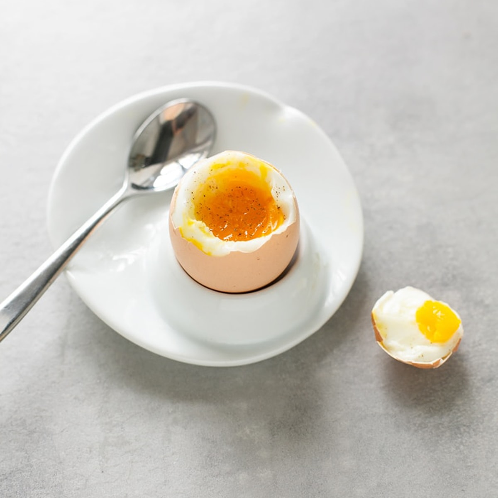
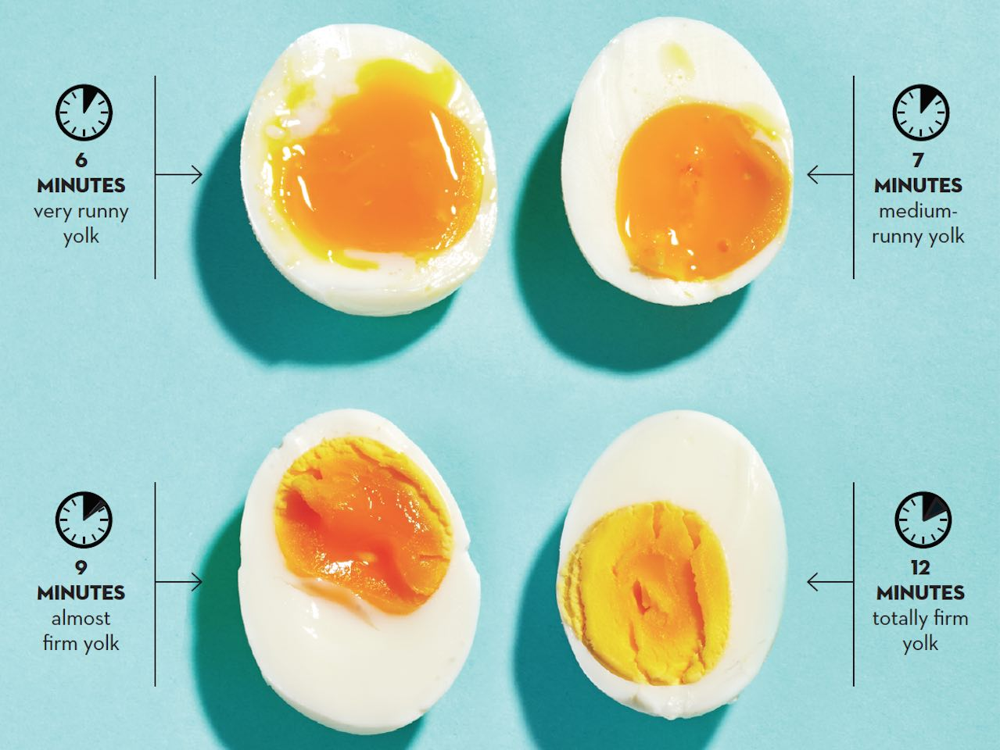

Boiled egg

No need for introduction. A classic and must.
Although straightforward seeming, boiling an egg has its rules, and it is not forgiving when broken
Even seconds can turn a perfectly runny boiled egg into a hardboiled one. Not that there's anything wrong with the latter, but depending on the dish, the timing must be perfect.
Here's a chart on the timing for each kind of boiled egg.

Ingredients
- Eggs
- A pinch of salt and cumin
- A timer
Steps
- Important Add 1 inch of water to a sauce pot, cover, and bring to a boil over high heat.
- Once boiling, add an egg (or however many you'd like as long as they are in a single layer in the bottom of the pot),
straight from the refrigerator into the pot. Replace the lid and let it continue to boil for exactly six minutes.
- After your desired runniness' minutes, remove the egg(s) from the pot and place them in an ice water bath or run under cool water until
they are cool enough to handle.
- Peel, cut in half, add a pinch of salt and cumin